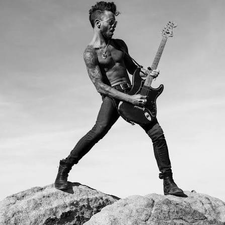
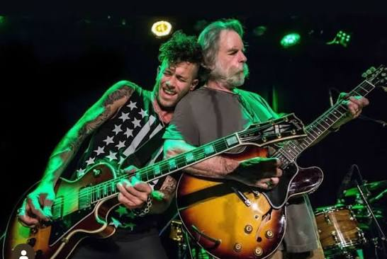
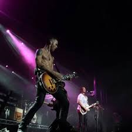

J Bowman
Multi-platinum, Grammy-nominated songwriter, composer, producer, musician and sound engineer.
From charting records to film, television and global brands, J Bowman creates sound with feeling, identity and lasting cultural impact.

Positioning
Sound that moves through culture.
J Bowman is an independent creative practice led by a multi-disciplinary music maker whose work moves between records, picture, brands and culture. He combines the instincts of a songwriter, the craft of an engineer and the perspective of a visual storyteller to create sound that carries identity.
The required shift: from respected talent known through credits and relationships to a visible creative auteur with a recognisable cultural signature.
Personality & voice
Cultured. Exacting. Restless. Magnetic. Unforced.
Write in compact, assured language. Use sensory words connected to tension, tone, movement, texture and emotion. Lead with ideas and outcomes; let credits appear as proof. First person is preferred for process, belief and point of view. Third person is appropriate for biography, press and credentials.
Generic "full-service studio" language; long credit dumps on primary pages; nostalgia-first storytelling; genre clichés; overuse of "legendary," "iconic" or "visionary"; equal visual weight for every service; obvious waveform, headphone, guitar-pick or vinyl-record logos.
Sound that moves through culture.
The line the identity runs on. It carries movement and reach in five words, holds across records, picture, brands and fashion, and needs no credit list behind it to make sense. Descriptor Written. Played. Produced. Scored. Recorded. Mixed. Six words for the full span of the work — set tracked and uppercase beneath the wordmark, or run as a single line in credits and email signatures.Three routes
Presented at moodboard level, with no single winner selected. Combine only after one strategic territory is chosen. The final system should have one dominant idea.
Logo architecture
Primary wordmark · utility lockup with approved descriptor
Typography
Colour
The system performs in pure black and white before colour is added. One signature colour carries the brand — a purple with red in it, warm enough to read as taste rather than costume, deep enough to hold its own on a leather label and a title card.
Image world
Cinematic portraiture; close detail of hands, instruments, tape, circuitry and worn studio surfaces; contact sheets; imperfect crops; hard flash used sparingly; deep shadows; fashion-editorial composition; fragments of notation and process. Balance present-day portraits with a tightly curated archive. Never allow the archive to make the brand feel retrospective.
Reference frames only · rights not cleared · replace with commissioned photography before publication
Graphic language
Fashion extension
Build a cultural label that can make objects — not a musician's merch range.
Fashion is designed into the identity from the beginning through scale, placement, materials and restraint. The system must work at 12 mm on a woven label, oversized across a back print, blind embossed into leather, stitched tonally into a cap and applied to packaging without losing integrity.
Use fewer, better pieces. Prioritise fabric, cut, construction and finish. Any product should be desirable to someone who has never heard the music.
Digital wrap
A premium portfolio and an active commissioning engine. Every channel answers four questions quickly: who is J Bowman, what can he create, why trust him, and how do I start a conversation?
Applications


